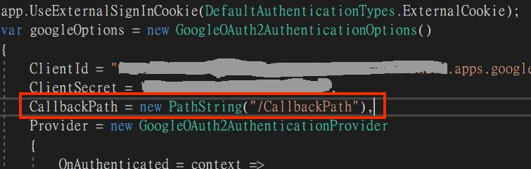
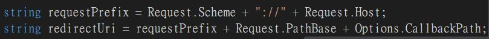
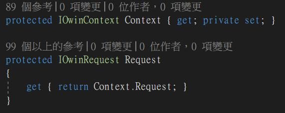

- 先前發現有網路爬蟲在站台裡Try東西，索性就把80Port給鎖了，然而登入是使用Google的第三方驗證，設定裡的RedirecUri是沒有https，所以得把它加上去。
- 可以在StartUp.Auth設定中定義CallbackPath

該欄位類別是PathString，由字面上來看不難想像這只能給路由位址，domain是不能改動的，所以更不用想在http後面加上s - 好在網路上有OpenSource，可以在這裡下載git，可以看到GoogleOAuth2AuthenticationHandler實際上定義RedirecUri是Request.Schema + Path，所以可以從Request下手
 - Request是來自於GoogleOAuth2AuthenticationHandler繼承的AuthenticationHandler裡面

所以我們如果能修改這個Request.Schema的話就可以達成我們的目的 - 方法一樣也是在StartUp.Auth裡多指定一項設定
1
2
3
4
5
6
7
8
9
10
11public partial class Startup
{
public void ConfigureAuth(IAppBuilder app)
{
app.Use((context, next) =>
{
context.Request.Scheme = "https";
return next();
});
..................